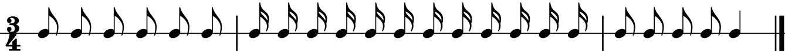
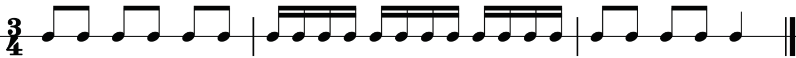
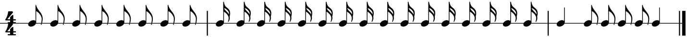
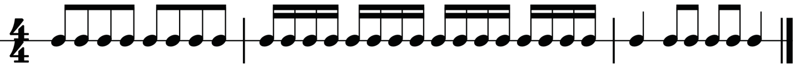
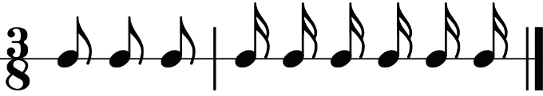
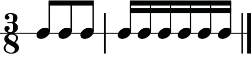
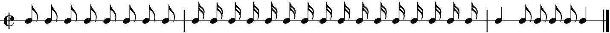
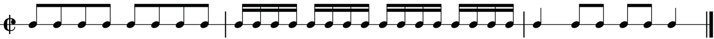
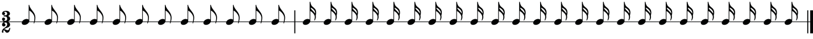

Music for Secondary Schools Student’s Book Form Two

Figure 1.37 (a): Ungrouped notes in three-four time
Figure 1.37 (b): Grouped notes in three-four time
Figure 1.38 (a): Ungrouped notes in four-four time
Figure 1.38 (b): Grouped notes in four-four time
Figure 1.39 (a): Ungrouped notes in three-eight time
Figure 1.39 (b): Grouped notes in three-eight time
Figure 1.40 (a): Ungrouped notes in two-two time
Figure 1.40 (b): Grouped notes in two-two time
Figure 1.41 (a): Ungrouped notes in three-two time